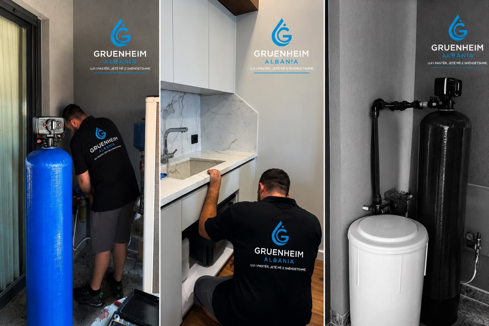

Instalim profesional
Sistem i vendosur me kujdes dhe i përshtatur me hapësirën tënde.
↗︎Kujdes për ujin, kujdes për shtëpinë
Çdo ditë nis me ujin që përdor. Zbulo zgjidhjet e Gruenheim për filtrimin, zbutjen dhe mirëmbajtjen e ujit në shtëpinë tënde.
Çdo pikë meriton vëmendje
Pamja e ujit nuk na tregon gjithçka. Nga filtri nën lavaman te sistemi për të gjithë shtëpinë, ekipi Gruenheim të ndihmon të kuptosh opsionet dhe të zgjedhësh sipas përdorimit tënd.
Shiko çfarë ofrojmë ↗︎
Kujdes që nis nga burimi
Filtrimi i ujit duhet të nisë nga nevoja konkrete e shtëpisë. Ne të dëgjojmë, të shpjegojmë çfarë mund të bëjë secila zgjidhje dhe kujdesemi për montimin e mirëmbajtjen.
Për familjet e përzgjedhura
Kërko analizë dhe testim falas në shtëpi. Një specialist do të të kontaktojë për të konfirmuar kërkesën. Mundësia e filtrit falas vlen për familjet e përzgjedhura.
Zbulo ofertën ↗︎Kujdes para dhe pas montimit
Natyra na jep ujin.
Ne zgjedhim si të kujdesemi për të.
Hapi i parë është një bisedë
Na trego çfarë të shqetëson. Ekipi ynë të ndihmon të gjesh informacionin e duhur.